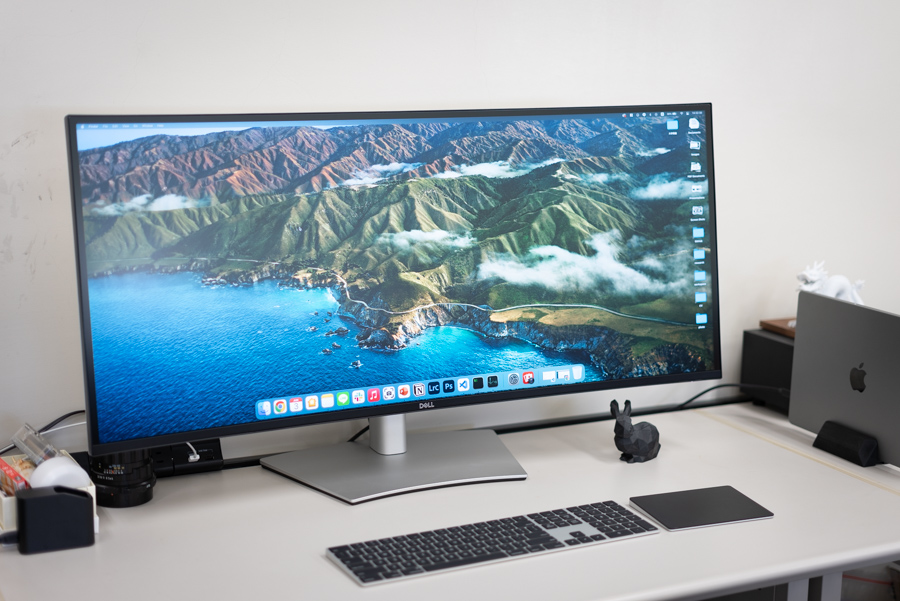

Home
Publication
Make
Photo
Misc
Misc
Software for Research
EasyPySpin
cv2.VideoCapture like a wrapper for FLIR Spinnaker SDK.
Structured Light
Generate and Decode structured light. Binary, Gray, XOR, Ramp, Phase-Shifting, Stripe.
Polanalyser
Polarization image analysis tool. Demosaicing, Stokes vector, Mueller matrix.
FullScreen
Display the image in full screen.
optosigma
Control OptoSigma (Sigma Koki) Motorized Stages
BTF Rendering
Custom plugin in Python for BTF (Bidirectional Texture Function) rendering with Mitsuba 2.
Light Transport Matrix Acquisition
Light Transport Matrix Acquisition
My desk (lab)

This is my desk in the lab.
Dell, U4021QW UltraSharp Curved WUHD Monitor
Apple, MacBook Pro (14-inch, 2021)
Apple, Magic Keyboard
Apple, Magic Trackpad